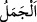
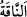
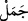
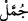
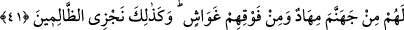

Hem de zift, ak süt gibi olduğu vakit
“
” (deve), devenin erkeğine denir. “
” ise dişi devedir. Erkek deve ancak
yedi yaşına girdiği zaman “cemel” diye isimlendirilir. Yedi yaşına giren erkek deveye
“rabâ‘ ’” dendiği gibi dişisine de “rabâ‘iyye” denilir.
Ayette geçen “
” kelimesi “
” diye de okunmuştur. O takdirde kendirden
yapılmış kalın ip veya gemileri bağlamada kullanılan halat anlamına gelir.
“İşte biz suçluları böyle” cennete girmelerine mani olmak suretiyle korkunç bir
şekilde “cezalandırırız”. Onlar da kendi gruplarına dahil olup cehenneme
gireceklerdir.
41. Onlar için cehennem ateşinden döşekler, üstlerine de örtüler vardır. İşte
zalimleri böyle cezalandırırız!
“Onlar için cehennemden” yaslanıp dayanacakları ve üzerinde oturacakları ateşten
“bir döşek ve üstlerinde de” onları kapatıp örtecek ateşten “örtüler vardır.”
Ayetin mânâsı, cehennem ateşinin onları her yönden kuşatıp çepeçevre saracağını
haber vermektedir. Bir hadiste de şöyle buyurulmuştur: “Kâfire kabrinde ateşten iki
levha giydirilir.”[33]
“İşte zalimleri böyle cezalandırırız.” İşte zalimler bu şekilde şiddetli bir cezaya
çarptırılacaktır. O da ateşle azab olunmalarıdır. Cehennem ateşiyle ebedi olarak
azablandırmak cezaların en şiddetlisi olduğuna göre zulmün onunla birlikte
zikredilmesi, onun günahların en büyüğü olduğuna delâlet eder.
Şunu bil ki nimetlerden mahrum olmak, cehennemin sıkıntıları ile karşı karşıya
gelmekten daha kolaydır. En büyük musibet ise orada ebedî olarak kalmaktır.
Bir gün Hasan Basrî (rh.a.)’ın yanında bin yıl azap çektikten sonra “Ya Hannân, ya
Mennân” diyerek cehennemden en son çıkacak olan Hennâd isminde bir adamdan
bahsedildi. Hasan ağlamaya başladı ve “Keşke Hennâd ben olsaydım.” dedi. Orada
bulunanlar buna teaccüb edince onlara: “Yazık size! En azından o bir gün cehennemden
çıkacak!” dedi.
“Bizim ayetlerimizi” peygamberlere indirilen güzel yolları, Allah Teâlâ’nın velî
kulları elinde ızhar ettiği kerametler ile ledünnî ilimleri “yalanlayan” inkar eden “ve
onlara inanmaya tenezzül etmeyenler” onları kabul etmek ve onlara inanmak